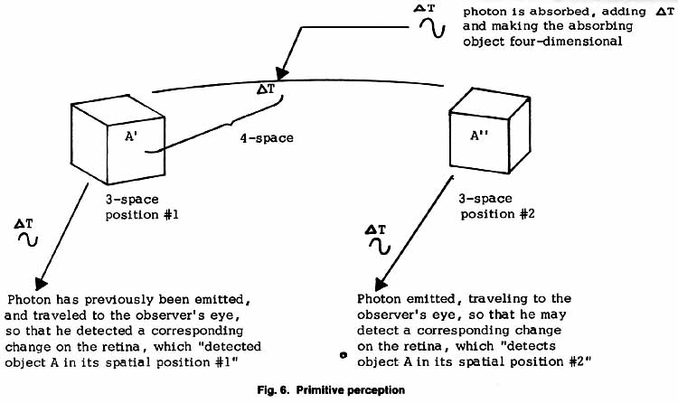

|
PRIMITIVE PERCEPTION Let us now discuss how we form our concept of objects and their relationship. All our basic perceptual concepts are essentially built on primitive observation of the macroscopic universe, which is the primary reason that so many final arguments of philosophers appeal to the "natural man," i.e., to how a primitive observer would react to the argument. The very idea of an object - a perceived object - is conditioned. Everything else we think of is then conceived as some sort of object or relation between objects. And that is why sets (of perceptual objects} and their relationships form the basis for axiomatic logic, mathematics, and physics. Set theory is simply the synthesized and abstracted game of elementary perception of the macroscopic world. Thus even the most abstruse mathematics forms a part of the game of perception and can be applied to perceived physical phenomena. This macroscopic, primitive perception is the basis of our concept of objectivity, and of our physical concepts of "observed" and "observable." But if we examine carefully exactly how we perceive an object in the |

| macroscopic world, we realize that it is seen by means of photon
interaction. We think of light being absorbed onto the surface of
the object, and then emitted or reradiated from the surface, eventually
entering the eye. There the photons are again absorbed by the
material on the retina. The photo-electric effect then moves what
are called electrons, producing a signal that goes to the brain for
interpretation What we see as an object has twice undergone interaction with photons of light. Furthermore, light itself cannot be detected, only its interaction with matter (in this case electrons). Thus the primitive perceptual operations of the human brain are correlated , one-to-one with photon emission and absorption interactions, usually paired interactions at the object reality domain. The concepts of object, mass, three-dimensions, and observation are directly correlated to the photon-mass interaction, and ultimately to the photon-electron interaction occurring in the human retina. The ideas of boundary, surface, and change in primitive perception thus involve two contradictory and simultaneously mixed interactions, absorption and emission. Because they are constantly intermingled, primitive perception cannot separate the two. Thus the primitive concept of a boundary consists of a simultaneous duality. Here the object both begins and ends. Here opposites are identified. This is the basis for the fourth law of logic, the law of the boundary. The dimensionality and orthogonality (spatially) of the primitive perception process are also interesting. Photon absorption constitutes spatial integration for the photon, dimensionally speaking, e.g., one additional dimension is gained by the two-dimensional light wave in turning itself into the three-dimensional mass state. The photon also adds its piece of time to the absorbing mass, converting the mass particle to mass time or space time - adding the fourth dimension. Photon emission constitutes spatial differentiation, dimensionally speaking. One spatial dimension is lost by a little hunk of three-dimensional mass turning itself into a two-dimensional wave. Going from outside the object toward the inside (to track along with photon absorption), the boundary marks the end of the two-dimensional wave region, so the object (or, more precisely, the interaction region) is spatially two-dimensional on the outside, and spatially three-dimensional on the inside. It also occupies the time dimension on the inside, but not on the outside. (This directly accounts for a difference in the spacetime inside and the spacetime outside, and that is why mass may be regarded as a curvature or change in spacetime, in general relativity.) Going from inside the object toward the outside, the boundary marks the end of the spatially three-dimensional region and the beginning of the spatially two-dimensional region. So the object is now spatially three-dimensional on the inside, spatially two-dimensional on the outside. The inside now does not occupy the time dimension, while the photon emitted (the outside) does. So on the boundary, one spatial dimension is gained going in, and one spatial dimension is lost going out. Time is gained going in and lost going out, by the mass absorber-emitter. Gain or loss of a dimension is accomplished only by orthogonal rotation between orthogonal spatial frames. Photon absorption constitutes orthogonal spatial rotation one right angle turn into the laboratory frame, while photon emission constitutes orthogonal spatial rotation one right angle turn out of the laboratory three-space frame. This constitutes the observation process (primitively) per se, and this is what is hidden in Einstein's postulate that the speed of light is the same to every observer . Every observer goes through this same process. Furthermore, rotations orthogonal to a three-space frame are orthogonal to all three-dimensional spatial physical entities in that three-space. As Einstein himself once pointed out, velocity can be regarded as simply the measure of rotation of an entity in a higher dimensional space; thus an orthogonal turn is a fixed velocity. Since light is orthogonal to the entire space, then the speed of light is the same to every observer in that space. While Einstein was apparently speaking of regarding the velocity of an object as a measure of its amount of rotation toward the time axis in four-space (from the direction of its velocity vector in laboratory three-space ), it can also be regarded as rotation toward a fourth spatial axis in a five-space (four length dimensions and one time dimension, all orthogonal. If one checks this, one will see that the projections in three-space are the same; i.e., to the laboratory frame observer, there is no difference observable. Thus the photon interaction may be modeled as orthorotation of an entity spatially in a five-space. To the laboratory observer, this orthorotation constitutes pure dimensional integration and dimensional differentiation, and it constitutes or creates an object in the first place. The concept of object a priori involves the photon interaction as stated; if the photon interaction is not invoked, then the existent entity does not exist as a three-dimensional object at all, in the primitive sense. Outside this primitive process (dimensional integration and differentiation imposed upon the same region, which constitutes an object), all exists in the Omega nothingness void, with out frame or form. Ultimate reality (specifically, action) is dimensionless in the objective sense; for the objective sense exists only after an operation has been imposed. A quantum it self is length less (and has no exclusive energy, time, or momentum) until differentiation is imposed upon it. Only after a quantum of action is fissioned does there exist a discrete piece of {change in) length, time, energy, mass, momentum, etc. I have already shown that perception itself can be modeled in terms of action quanta fission and fusion, and that most of the basic laws of physics can be derived from that model. {See my Quiton/ Perception Physics. ) Fission and fusion of action quanta involve orthogonal rotation between orthogonal three-spaces sharing the same fourth dimension (time) in common. The words change, interact, localize, superpose, operate, move, oscillate, act, cause, and determine are only a few of the words used in physics to conceal the basic occurrence of orthogonal rotation in higher dimensional space. Finally, it should be stressed that i, the square root of minus one, itself constitutes an orthogonal axis, hence an extraspatial dimension. The addition of this quantity to electromagnetic theory allowed the resolution of formidable problems, and led to the direct formulation of electromagnetic theory. Thus electromagnetic theory already includes higher dimensionality and orthogonal rotation in hyper-space. In that sense, inductance and capacitance are merely vector statements of amounts of rotation, one in a positive direction and the other in a negative direction, toward an orthogonal axis in higher dimensional space. The forming (beginning and ending) of a three-dimensional spatial object constitutes a time differentiation invoked on four-dimensional Minkowskian space, i.e., the process of observation or detection itself involves ∂ /∂T (L3T) = L3 dimensionally speaking. This process is accomplished by orthogonal rotation, and the very concept of an object that has been observed, detected, or perceived implicitly involves this time differentiation invoked on a four-space. Velocity also represents a statement of the switching of time into length, and length into time. It is therefore a measure of rotation of the spatial three-dimensional frame, as Einstein pointed out. By this switching (orthogonal rotating, orthogonal flipping) of the chopping of time or beginning and ending of a small piece of time, we create a little delta T, just as we do each delta L for an object. But the photon interaction process is monocular. Each photon must attack matter individually, and live or die in the process. Each photon born from matter is also born independently. Thus the primitive observation process is monocular, since it is totally in one-to-one correspondence with photon interaction that is monocular. Thus the observed world is monocular, quantized, discretized. Because of the particular one-to-one correspondence between our primitive concepts and a single interaction, we can conceive the world in no other fashion, unless we change the very basic factor of one-to-one correlation. This in fact has already been done for physics by Everett, whose theory of the universal wave function incorporates multiple simultaneous observation, and hence direct insight beyond the limitations of the monocular correspondence to the photon interaction. My theory does the same thing in the fields of logic and mind. |